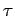
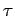

Inhalt Index DeskTop Bronstein

 Geometrie Differentialgeometrie Raumkurven Krümmung und Windung
Geometrie Differentialgeometrie Raumkurven Krümmung und Windung


Man kann die Ableitungen der Vektoren und  nach dem Parameter s mit Hilfe der FRENETschen Formeln ausdrücken:
nach dem Parameter s mit Hilfe der FRENETschen Formeln ausdrücken:
Dabei sind  der Krümmungs- und  der Windungsradius.
der Krümmungs- und  der Windungsradius.